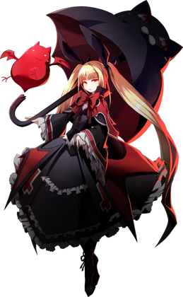

◈ DLC · TSUKUYOMI UNIT
Rachel
BlazBlue: Entropy Effect — Персонаж
85
Атака
50
Защита
60
Скорость
70
HP
★★☆
Сложность
Контроль
Тип боя
Rachel Alucard — первый DLC-персонаж BlazBlue Entropy Effect, доминирующий на поле боя благодаря своей подавляющей силе. С латентным контролем над установкой Цукуёми (Tsukuyomi Unit) она полностью игнорирует входящий урон. Её многочисленные фамильяры помогают в бою, не оставляя безопасных зон на экране.
Tsukuyomi (Negate)
Silpheed
Familiars

01
Досье персонажа
Имя
Rachel Alucard
Титул
Mistress of Wind / Observer
База HP / Атака
810 / 180
Уникальная механика
Tsukuyomi Unit — полное игнорирование урона
Роль
Zoner / Контролёр поля боя
Особенность
Фамильяры, ветер, отражение снарядов
Боевые характеристики
ATK85
DEF50
SPD60
HP70
RANGE90
SKILL80
Талант (Talent)
Ivy Blossom
Если Rachel не атакует несколько секунд, вокруг неё появляются фамильяры-летучие мыши. При приближении к врагам они сливаются и наносят непрерывный урон. Урон считается атакой и триггерит эффекты Attack-тактик.
Если Rachel не атакует несколько секунд, вокруг неё появляются фамильяры-летучие мыши. При приближении к врагам они сливаются и наносят непрерывный урон. Урон считается атакой и триггерит эффекты Attack-тактик.
02
Навыки и приёмы
George XIII
Legacy Skill 1
Призывает лягушку, которая выпускает электрический разряд до 3 раз при приближении врагов.
Лягушка чрезвычайно живучая и перетягивает на себя агрессию всех врагов — от обычных мобов
до ракетных залпов Sweeper. Сила лягушки растёт с уровнем.
Tempest Dahlia
Legacy Skill 2
Призывает поток ветра, наносящий урон врагам в большой области.
Обеспечивает невероятный контроль толпы — сбивает всех обычных врагов
в направлении взгляда Rachel. Можно сбросить врагов в пропасть, на шипы или
прижать к стене. Длительность растёт с уровнем.
Silpheed
Drive / Управление ветром
Уникальная механика ветра: влияет на движение Rachel, её снаряды
и даже на противников. Используется для ускорения снарядов,
увеличения дальности атак и контроля позиционирования.
При активации создаёт порыв ветра, отбрасывающий врагов.
[Ground] Attack — 3-hit Combo
Базовая атака
Комбо из 3 ударов: Rachel создаёт вихрь, детонирует его, затем сбрасывает клинок сверху.
С потенциалами увеличивается дальность и область распространения вихря,
а оставшиеся маленькие вихри также наносят урон.
[Airborne] Attack — 2-hit Combo
Воздушная атака
Rachel выпускает летучих мышей, которые атакуют врагов впереди.
При удержании кнопки атаки выполняет plunging attack с мечом, нанося урон по площади.
Воздушные атаки могут быть усилены ветром Silpheed.
Heavy Strike: Whirlwind
Заряженная атака
[Ground] Hold Attack: Rachel выпускает клинок, который продолжает наносить урон.
При наличии всех Heavy Strike-потенциалов вторая заряженная атака превращается
в грозовую бурю, притягивающую врагов.
Dash Attack
Рывок + Атака
Rachel совершает рывок с одновременным выпадом мечом. Быстрое сближение
с врагом и нанесение урона. Может быть отменено в Silpheed для дополнительного
контроля позиции.
Baden Baden Lily
SP Skill
Rachel призывает молнию, которая поражает ближайшего врага, нанося высокий урон
и оглушая его. При наличии ветра Silpheed молния может быть направлена в нужную сторону.
Стоимость: 40 SP.
Tsukuyomi Unit
Уникальная механика
Латентный контроль над установкой Цукуёми позволяет Rachel полностью игнорировать
входящий урон. При активации (автоматически при получении удара) Rachel становится
неуязвимой на короткое время и выпускает взрывную волну. Восстанавливается 15 секунд.
Enhanced Silpheed (Potential)
Потенциал
Увеличивает длительность и силу ветра Silpheed. Ветер начинает наносить урон
врагам, находящимся в нём, и может отражать снаряды обратно в противника.
Familiar Swarm (Potential)
Потенциал
Увеличивает количество летучих мышей, призываемых талантом Ivy Blossom.
Мыши наносят больше урона и могут атаковать нескольких врагов одновременно.
03
Основные механики
Система ветра (Silpheed)
Rachel управляет ветром, который влияет на траекторию её атак и снарядов, а также на врагов.
Ветер может ускорять снаряды, увеличивать дальность атак, отбрасывать противников и даже
отражать вражеские снаряды. Правильное использование ветра — ключ к контролю поля боя.
Фамильяры-помощники
George XIII и летучие мыши Ivy Blossom действуют автономно, отвлекая врагов
и нанося дополнительный урон. Это позволяет Rachel сосредоточиться на позиционировании.
Абсолютная защита
Tsukuyomi Unit даёт Rachel периодическую неуязвимость, позволяя ей агрессивно
атаковать, не опасаясь ответного урона. Важно следить за временем восстановления.
Контроль толпы
Tempest Dahlia — один из лучших навыков контроля толпы в игре. Он сбивает с ног
практически всех обычных врагов и позволяет сбросить их в пропасть или ловушки.
Отражение снарядов
С потенциалом Enhanced Silpheed ветер Rachel отражает вражеские снаряды,
превращая атаки противника в его же оружие. Особенно эффективно против боссов-снайперов.
04
Советы по игре
- 🌪️Используй ветер для усиления атак. Активируй Silpheed перед использованием Baden Baden Lily или Tempest Dahlia, чтобы увеличить их дальность и скорость.
- 🌪️George XIII — отличный танк. Призывай лягушку перед сложными волнами врагов, чтобы она приняла на себя основной урон.
- 🌪️Tempest Dahlia сбрасывает врагов с платформ. На уровнях с пропастями используй этот навык, чтобы мгновенно устранять целые группы.
- 🌪️Следи за кулдауном Tsukuyomi Unit. Не полагайся на неуязвимость постоянно — используй её для агрессивных рывков или спасения в критический момент.
- 🌪️Ivy Blossom работает даже в воздухе. Если ты долго висишь в воздухе, летучие мыши всё равно появятся и атакуют ближайших врагов.
- 🌪️Потенциал Enhanced Silpheed обязателен. Отражение снарядов кардинально меняет стиль игры против боссов вроде Arakune или Mu-12.
- 🌪️Комбинируй наземное комбо с Heavy Strike. После 3-hit комбо удерживай атаку, чтобы выпустить вихрь, а затем добей врагов Baden Baden Lily.